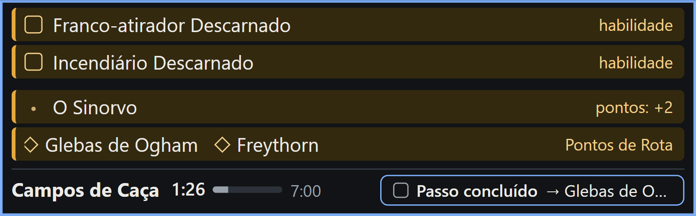
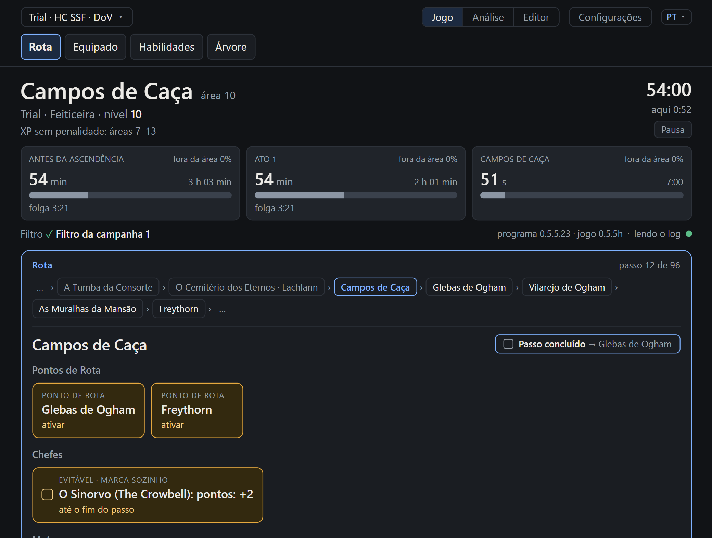
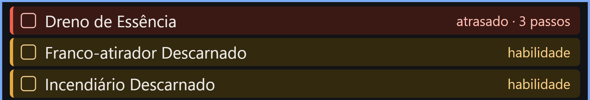
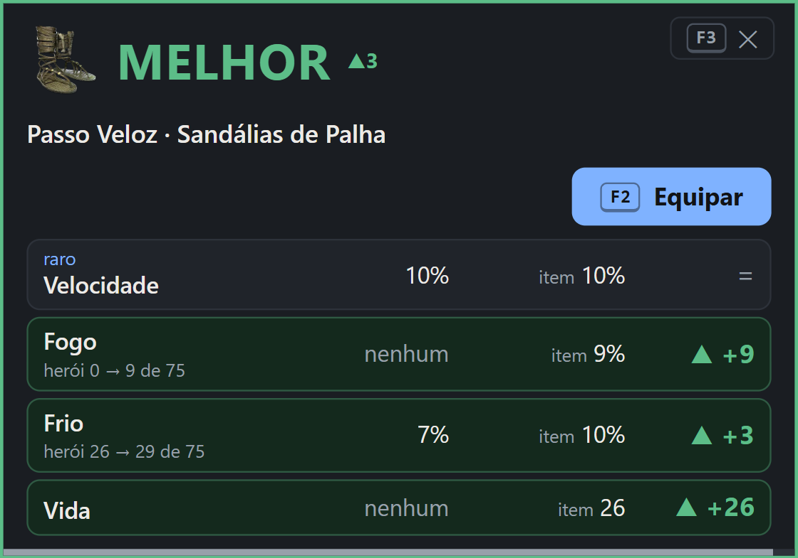
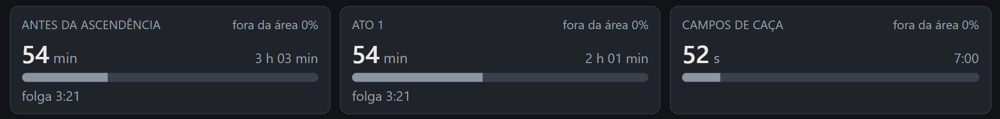
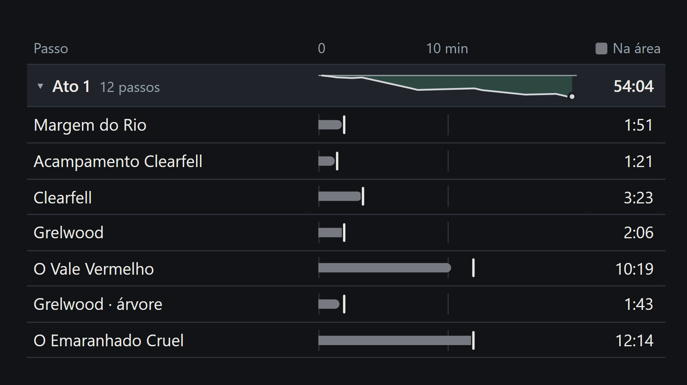
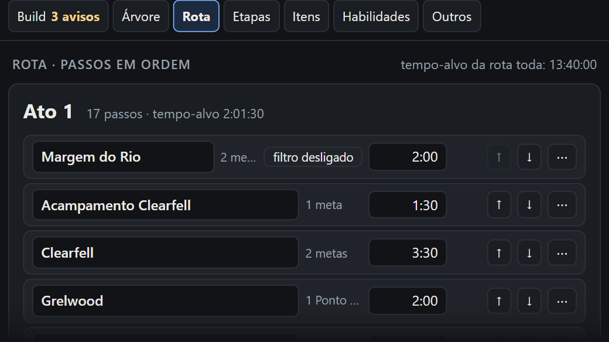

Jogue como um pro
O autor do plano já gastou por você as centenas de horas de tentativa e erro. O Runbook guia você pelo plano: para onde ir, quem matar e o que pegar em cada área.
Baixar para WindowsPara autores de builds
A primeira versão ainda não foi publicada

É só jogar
Entrou na área — o Runbook já mostra o que fazer nela. Nível, recompensas e nós da árvore ele marca sozinho.

A linha vermelha não some
O autor do plano sabe até qual passo você precisa pegar e equipar cada coisa. Atrasou — a linha fica vermelha e continua lá até você fazer.

Equipar ou descartar
F2 sobre o item — e você vê se ele é melhor ou pior que o equipado. Pelos stats que o autor do plano escolheu.

No ritmo do autor
Cada passo e cada ato tem o seu tempo no plano. Dá para ver onde você está com folga e onde está atrasado.

Análise
Cada minuto conta
Depois de jogar, a “Análise” mostra para onde foi o tempo: por passo, na área, na vila e fora da rota. Compare com o herói anterior — e você vai ver onde ficou mais rápido.


Sabe um jeito melhor?
Monte o seu plano. A campanha já está mapeada: cada área, chefe e recompensa. Adicione a build e os prazos.
PoE2 Runbook
Perguntas
Já tenho um guia. Para que eu preciso do Runbook?
Um guia você precisa ler, lembrar e conferir com o jogo. O Runbook vai junto com você: sabe em que área você está e mostra o que fazer agora.
Não tem plano para a minha classe. O que eu faço?
Os planos aparecem no catálogo quando os autores os compartilham. Enquanto isso, dá para montar o seu: a campanha já está mapeada, só falta adicionar a build.
Saiu um patch. O Runbook vai funcionar?
Depois de um patch, o Runbook precisa de uma versão nova. Enquanto ela não sai, o programa avisa que o jogo é mais novo. Quando ela sair, ele se atualiza com um só botão.
A lista não aparece sobre o jogo
Isso acontece quando o jogo está no modo “Tela Cheia”: ele cobre as janelas do Runbook. Escolha nas opções do jogo o modo “Tela Cheia em Janela” — e a lista aparece. Se não aparecer, confira nas “Configurações” do Runbook se a opção “Janelas sobre o jogo” está ligada.
O Windows não deixa executar o instalador
O instalador ainda não está assinado, e o Windows não conhece o fornecedor dele. Clique em “Mais informações” e depois em “Executar assim mesmo”. Como conferir o arquivo antes de executar
Sinto falta de uma função. Posso pedir?
Pode. Esta é a primeira versão, o programa vai evoluir, e qualquer pedido é bem-vindo: escreva o que está faltando ou o que não funciona direito. Escrever para o autor · Issues no GitHub